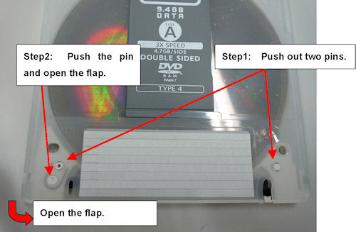
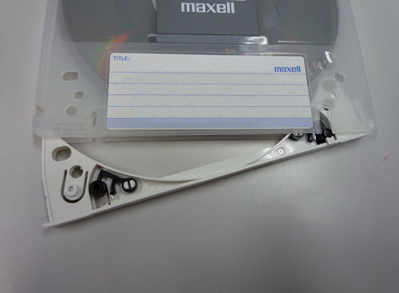
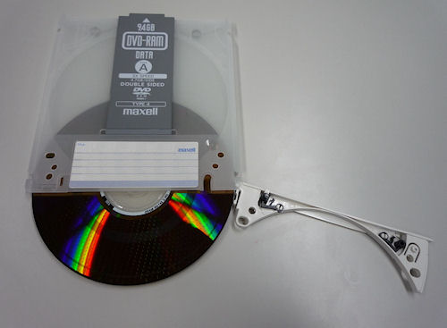
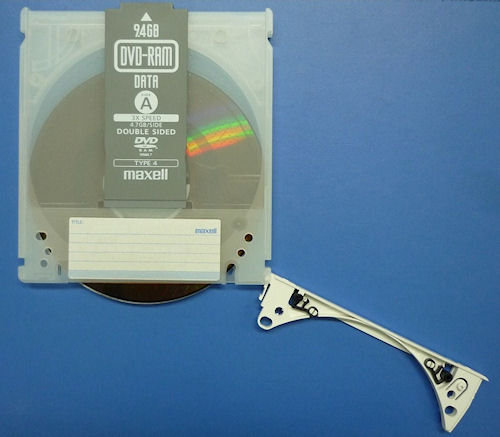
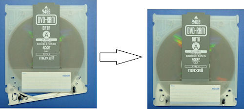
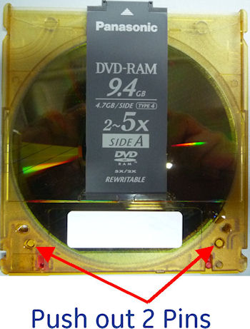
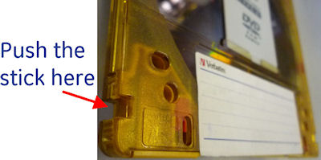
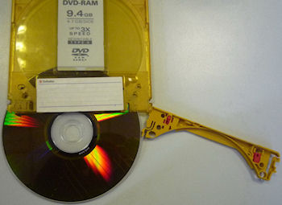
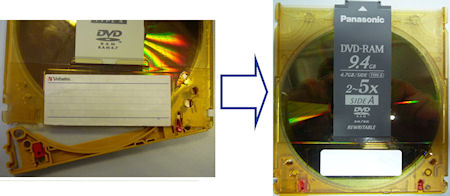

Operating Documentation
Direction 5181178-800, Rev# 16
BrightSpeed Select Service Methods Gen
Module Version 2.0, Version Date 2/27/11
Operating Documentation |
| Required Persons | Preliminary Reqs | Procedure | Finalization |
|---|---|---|---|
| 1 |
This procedure explains how to remove the DVD RAM cartridge for option key DVD installation to new PMT (5270510-10).
| Last revised: | February 25, 2011 |
Remove the 2 pins as shown in the following picture.
Illustration 1: Locking Pins

Put the stick (like ball point pen) and pull out the cartridge flap.
Illustration 2: Cartridge Flap

Remove the DVD media.
Illustration 3: DVD Media

Insert the media into the original cartridge for identification after usage of option installation.
Illustration 4: Media Inserting

Close and lock the flap, keep the media in a cabinet.
Illustration 5: Flap Closing

Remove the 2 pins as shown in the following picture.
Illustration 6: Locking Pins

Push the stick at right side of DVD RAM (with A side upwards) and swing out the cartridge flap.
Illustration 7: Stick at the Right Side

Remove the DVD media.
Illustration 8: DVD Media

Insert the media into the original cartridge for identification after usage of option installation.
Close and lock the flap.
Illustration 9: Flap Closing

No finalization steps.